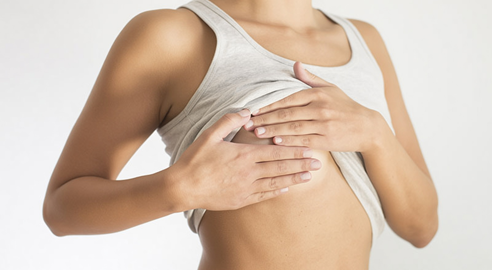

Hochauflösende MRT-Untersuchung der Brust ohne ionisierende Strahlung — ergänzt durch Brust-Ultraschall. Ideal für Hochrisiko-Screening, Implantat-Kontrolle und die Abklärung unklarer Befunde.
High-resolution MRI of the breast without ionising radiation — complemented by breast ultrasound. Ideal for high-risk screening, implant assessment and clarification of unclear findings.
Die Mamma-MRT ist die empfindlichste Methode zur Brustdiagnostik — überlegen bei dichtem Drüsengewebe, wo klassische Verfahren an ihre Grenzen stossen. Dank offener MRT-Technologie bieten wir die Untersuchung auch Patientinnen an, die unter Klaustrophobie leiden oder grösser gebaut sind.
Breast MRI is the most sensitive method for breast imaging — superior in dense glandular tissue where conventional methods reach their limits. Thanks to open MRI technology, we also offer the examination to patients who suffer from claustrophobia or are larger in build.
Die MRT wird in der Regel mit intravenösem Kontrastmittel (Gadolinium) durchgeführt, um Durchblutungsunterschiede zwischen normalem Gewebe und auffälligen Arealen sichtbar zu machen. Ergänzend bieten wir den Brust-Ultraschall für die zielgenaue Abklärung tastbarer Befunde, Zysten und Lymphknoten an.
The MRI is usually performed with intravenous contrast agent (gadolinium) to visualise differences in blood flow between normal tissue and suspicious areas. We also offer breast ultrasound for precise assessment of palpable findings, cysts and lymph nodes.
Höchste Sensitivität, kein Röntgen, ideal für dichtes Drüsengewebe, Hochrisiko-Patientinnen und Implantat-Abklärung
Highest sensitivity, no X-ray, ideal for dense glandular tissue, high-risk patients and implant assessment
Strahlungsfrei, dynamisch, ideal zur Abklärung von Zysten, tastbaren Befunden und axillären Lymphknoten
Radiation-free, dynamic, ideal for assessing cysts, palpable findings and axillary lymph nodes
Präzise Abklärung — dort, wo andere Methoden nicht ausreichen.
Precise clarification — where other methods are insufficient.
Jährliche MRT-Vorsorge bei BRCA1/2-Mutation, starker familiärer Belastung oder nach Strahlentherapie im Thoraxbereich (gemäss Swiss Cancer Screening Guidelines)
Annual MRI screening for BRCA1/2 mutation, strong family history or after chest radiation therapy (according to Swiss Cancer Screening Guidelines)
Beurteilung der Intaktheit von Silikonimplantaten — Erkennung von intrakapsulären und extrakapsulären Rupturen, Gelbleed, Kapselkontraktur
Assessment of silicone implant integrity — detection of intracapsular and extracapsular ruptures, gel bleed, capsular contracture
Weiterführende Abklärung nach unklarem Tastbefund, Mammographie oder Ultraschall — BI-RADS 0/3/4 Befunde, Sekretion ohne Korrelat
Further assessment after unclear palpation finding, mammography or ultrasound — BI-RADS 0/3/4 findings, discharge without correlate
Schnelle, strahlungsfreie Untersuchung bei tastbaren Knoten, Zysten, Lymphknotenbeurteilung axillär und als Ergänzung zur MRT-Abklärung
Fast, radiation-free examination for palpable nodules, cysts, axillary lymph node assessment and as a supplement to MRI clarification
Idealerweise zwischen dem 7. und 14. Tag des Menstruationszyklus (zweite Woche), da hormonell bedingte Gewebeanreicherungen das Bild in anderen Phasen erschweren können. Bei postmenopausalen Patientinnen oder Frauen unter Hormontherapie bitte bei der Terminvereinbarung angeben — wir beraten Sie individuell. Bei dringlicher Indikation kann die Untersuchung jederzeit durchgeführt werden.
Ideally between day 7 and 14 of the menstrual cycle (second week), as hormone-related tissue enhancement in other phases can complicate the image. For postmenopausal patients or women on hormone therapy, please indicate this when booking — we will advise you individually. For urgent indications, the examination can be performed at any time.
Für die diagnostische Mamma-MRT (Tumorabklärung, Screening) wird in der Regel ein intravenöses Gadolinium-Kontrastmittel verwendet. Es hebt die Durchblutungsmuster hervor, die für die Unterscheidung von gutartigem und bösartigem Gewebe entscheidend sind. Für die reine Implantat-Kontrolle sind spezielle Sequenzen (z. B. STIR/IDEAL) auch ohne Kontrastmittel möglich. Wir klären Ihre individuelle Situation bei der Terminvereinbarung ab.
For diagnostic breast MRI (tumour assessment, screening), intravenous gadolinium contrast agent is generally used. It highlights perfusion patterns that are crucial for distinguishing benign from malignant tissue. For implant assessment only, special sequences (e.g. STIR/IDEAL) are also possible without contrast agent. We clarify your individual situation when booking.
Mit ärztlicher Überweisung und medizinischer Indikation (z. B. BRCA-Mutation, unklarer Befund, Implantat-Rupturverdacht) werden Mamma-MRT und Brust-Ultraschall von der Grundversicherung (KVG) übernommen. Ein reines Vorsorge-Screening ohne erhöhtes Risikoprofil wird in der Regel von der Grundversicherung nicht gedeckt — klären Sie dies bitte vorab mit Ihrer Krankenkasse. Wir helfen Ihnen gerne administrativ weiter.
With a doctor's referral and medical indication (e.g. BRCA mutation, unclear finding, suspected implant rupture), breast MRI and breast ultrasound are covered by basic insurance (KVG). Pure preventive screening without an elevated risk profile is generally not covered by basic insurance — please clarify this with your insurer in advance. We are happy to help with administrative matters.
Offene MRT — angenehm für Patientinnen mit Klaustrophobie oder grösserer Statur.
Open MRI — comfortable for patients with claustrophobia or a larger build.
Swiss Open MRI · Schwyz
Unsere Radiologiepraxis befindet sich derzeit im Aufbau. Wir freuen uns, Sie ab Anfang 2028 in modernen Räumlichkeiten im Kanton Schwyz empfangen zu dürfen.